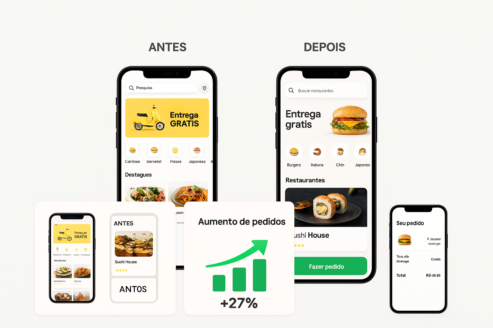

Causa/Problema
A DeliveryMax é uma empresa de delivery regional que competia com apps maiores. Eles tinham um bom número de restaurantes parceiros, porém o aplicativo apresentava uma interface antiga, carregada de elementos, difícil de navegar e com uma taxa alta de abandono na etapa de checkout.
Os clientes reclamavam que “era confuso”, “difícil de encontrar o que queria” e “travava muito”.
A empresa percebeu que precisava de um redesign moderno e eficiente, inspirado em experiências como iFood, Uber Eats e Rappi, mas com identidade própria.
Desafio
Melhorar a experiência do usuário sem perder a essência do aplicativo.
A meta era clara:
• reduzir a taxa de abandono
• deixar a navegação mais intuitiva
• melhorar a velocidade do app
• modernizar o visual para competir com gigantes do mercado
A equipe interna não tinha designers especializados em UX/UI, então nos contrataram para criar uma nova interface completa do zero.
Solução Aplicada
Criamos uma nova interface baseada em três pilares:
1. Simplicidade visual
Removemos elementos confusos e reorganizamos tudo em blocos claros, com foco no que o usuário realmente precisa ver.
2. Navegação inteligente
Inspirada na arquitetura de apps como Uber e Mercado Livre, a navegação passou a ser fluida, com ícones padronizados, botões mais acessíveis e categorias reorganizadas.
3. Checkout otimizado
Transformamos um processo de 6 passos em apenas 3, com feedback visual imediato, barras de progresso e validação automática.
Além disso:
• criamos uma nova paleta de cores;
• redefinimos a tipografia;
• desenvolvemos componentes reutilizáveis;
• criamos protótipos navegáveis;
• entregamos todo o design responsivo (app + web);
A empresa ganhou uma interface digna dos grandes aplicativos de mercado.
Resultados Alcançados
Após três meses de uso:
• taxa de abandono no checkout caiu 42%;
• número de pedidos aumentou 27%;
• tempo médio para encontrar um restaurante caiu de 38s para 19s;
• aplicativo recebeu 4.8 estrelas nas lojas, antes tinha 4.1;
• clientes elogiaram a “facilidade” e o “visual moderno”;
A DeliveryMax finalmente pôde competir com apps maiores da região.
Prova Visual

Depoimento do Cliente
“A equipe conseguiu transformar completamente a experiência do nosso aplicativo. O layout ficou limpo, rápido e profissional. Nossos clientes elogiam todos os dias. Não foi só um redesign — foi uma virada de chave no nosso negócio.”
— Marcos Avelar, CEO da DeliveryMax
Conclusão
A DeliveryMax é um exemplo claro de como uma interface bem planejada pode transformar um produto digital. Quando combinamos estética, simplicidade e estratégia, o resultado aparece em números, avaliações e na satisfação dos usuários.